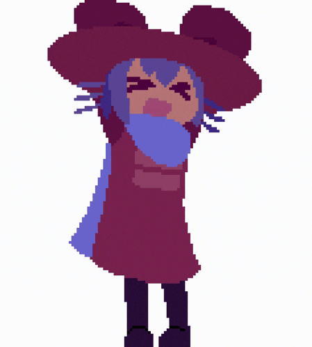

Po pořádné bitce s rebely jsi nakonec pana Ráčka zachránil.
Následně přijela záchranka a policie, kteří si rebely a Ráčka převzali.
Splnil si misi.
Hledá se Ráček!
Credits:
Martin Bucňák
Hlavní programátor
Ondřej Kocich
Asistent hlavního programátora
Jakub Martínek
Podprogramátor 1. role, grafik
Tereza Dufková
Podprogramátorka 2. role, grafička
Jan Gaťařík
Asistent, sběratel informací
RNDr. Jaroslav Ráček, Ph.D.
Za to, že nám toto všechno povolil
A vy!
Za hraní naší hry!
Děkujeme Vám mockrát!

Klikni zde na úvod.